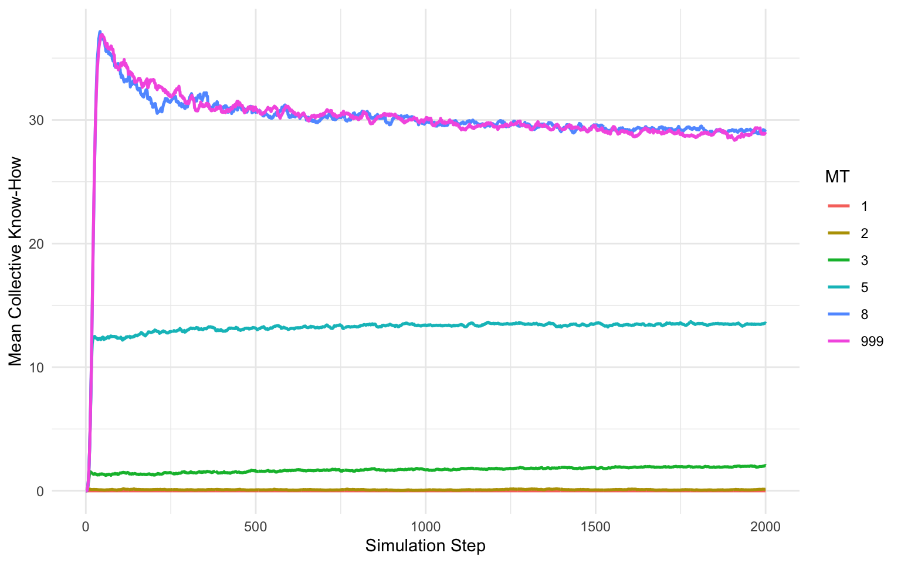

![]()
df_ss %>%
summarise(
Mean_CK = mean(mean.firm.ck),
SD_CK = sd(mean.firm.ck),
Min_CK = min(mean.firm.ck),
Max_CK = max(mean.firm.ck)
) %>%
kable(digits = 3)| Mean_CK | SD_CK | Min_CK | Max_CK |
|---|---|---|---|
| 12.29 | 12.882 | 0 | 39.6 |
Supplementary Material
This supplementary material provides the complete computational workflow, statistical diagnostics, and distributional estimations supporting the study “From Knowledge to Innovation Capabilities: An Agent-Based Exploration of Coordination and Credit Constraints.” It reproduces all descriptive trajectories, steady-state heatmaps, factorial ANOVAs, General Linear Model (GLM) assumption audits, and Generalized Additive Models for Location, Scale, and Shape (GAMLSS) reported in the main manuscript using the pre-processed simulation dataset from the VIRTECOM agent-based model.
Innovation capabilities, Economic Complexity, Agent-based modeling, Collective know-how
To ensure full reproducibility and streamline execution time, we load the curated longitudinal dataset generated by the VIRTECOM NetLogo simulation (data.RData), encompassing 1,440,720 simulation records across 720 independent runs (\(t \in [1, 2000]\)). We then extract the terminal cross-sectional snapshot at \(t = 2000\) (df_ss) representing quasi-stationary steady-state outcomes.
We organize our results in four subsections: 1) the emergence of collective know-how, 2) collective know-how as a microfoundation of innovation capabilities, 3) innovation capbility formation under cognitive and financial constraints, and 4) distributional heterogeneity and regime transitions.
df_ss %>%
summarise(
Mean_CK = mean(mean.firm.ck),
SD_CK = sd(mean.firm.ck),
Min_CK = min(mean.firm.ck),
Max_CK = max(mean.firm.ck)
) %>%
kable(digits = 3)| Mean_CK | SD_CK | Min_CK | Max_CK |
|---|---|---|---|
| 12.29 | 12.882 | 0 | 39.6 |
p_ck_time <- df_clean %>%
group_by(step, max.triads.per.worker) %>%
summarise(
CK = mean(mean.firm.ck),
.groups = "drop"
) %>%
ggplot(
aes(
step,
CK,
color = factor(max.triads.per.worker)
)
) +
geom_line(linewidth = .9) +
labs(
x = "Simulation Step",
y = "Mean Collective Know-How",
color = "MT"
) +
theme_minimal()
p_ck_time
p_ck_heatmap <- df_ss %>%
group_by(
max.triads.per.worker,
credit.limit.base
) %>%
summarise(
CK = mean(mean.firm.ck),
.groups = "drop"
) %>%
ggplot(
aes(
factor(max.triads.per.worker),
factor(credit.limit.base),
fill = CK
)
) +
geom_tile(color="white") +
scale_fill_viridis_c() +
labs(
x = "Max Triads",
y = "Credit Limit",
fill = "CK"
) +
theme_minimal()
p_ck_heatmap
fit_ck <- aov(
mean.firm.ck ~
factor(max.triads.per.worker) *
factor(credit.limit.base),
data = df_ss
)
summary(fit_ck) Df Sum Sq Mean Sq
factor(max.triads.per.worker) 5 116038 23208
factor(credit.limit.base) 5 40 8
factor(max.triads.per.worker):factor(credit.limit.base) 25 73 3
Residuals 684 3163 5
F value Pr(>F)
factor(max.triads.per.worker) 5018.886 <2e-16 ***
factor(credit.limit.base) 1.735 0.124
factor(max.triads.per.worker):factor(credit.limit.base) 0.633 0.918
Residuals
---
Signif. codes: 0 '***' 0.001 '**' 0.01 '*' 0.05 '.' 0.1 ' ' 1eta_squared(
fit_ck,
partial = TRUE
)# Effect Size for ANOVA (Type I)
Parameter | Eta2 (partial) | 95% CI
---------------------------------------------------------------------------------------
factor(max.triads.per.worker) | 0.97 | [0.97, 1.00]
factor(credit.limit.base) | 0.01 | [0.00, 1.00]
factor(max.triads.per.worker):factor(credit.limit.base) | 0.02 | [0.00, 1.00]
- One-sided CIs: upper bound fixed at [1.00].The results indicate that collective know‑how emerges primarily from cognitive coordination structures. Cognitive constraints explain nearly all observed variation in collective know‑how, whereas access to credit has negligible explanatory power.